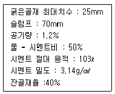
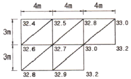
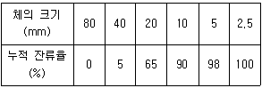
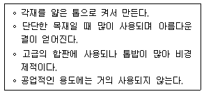
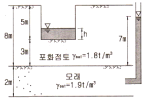
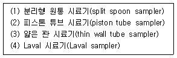

건설재료시험기사 (2012-05-20 기출문제)
1과목: 콘크리트공학
1. 일반 콘크리트 비비기에 대한 설명으로 틀린 것은?
- 가경식 믹서를 사용하여 비비기를 할 경우 비비기 시간은 최소 1분 30총 이상을 표준으로 한다.
- 강제식 믹서를 사용하여 비비기를 할 경우 비비기 시간은 최소 1분 이상을 표준으로 한다.
- 비비기는 미리 정해둔 비비기 시간의 3배 이상 계속하지 않아야 한다.
- 비비기 시작 후 최초에 배출되는 콘크리트는 사용하지 않는 것을 원칙으로 하나, 연속믹서를 사용할 경우는 사용할 수 있다.
(정답률: 81%)

2. 지름이 100mm 이고 길이가 200mm인 원주형공시체에 대한 할렬인장시험결과 최대하중이 120kN이라고 할 경우 이공시체의 할렬인장강도는?
- 1.87MPa
- 3.82MPa
- 6.03MPa
- 7.66MPa
(정답률: 70%)
3. 유동화 콘크리트에 대한 설명으로 틀린 것은?
- 유동화 콘크리트의 슬럼프 값은 최대 210mm 이하로 한다.
- 유동화제는 질량 또는 용적으로 계량하고, 그 계량 오차는 1회에 1% 이내로 한다.
- 유동화 콘크리트의 슬럼프 증가량은 100mm 이하를 원칙으로 하며, 50~80mm를 표준으로 한다.
- 베이스 콘크리트 및 유동화 콘크리트의 슬럼프 및 공기량 시험은 50m 마다 1회씩 실시하는 것을 표준으로 한다.
(정답률: 59%)
4. 초음파 탐상에 의한 콘크리트 비파괴 시험의 적용 가능한 분야로서 거리가 먼 것은?
- 콘크리트 두께 탐상
- 콘크리트와 철근의 부착 유무 조사
- 콘크리트 내부의 공극 탐상
- 콘크리트 내의 철근 부식 정도 조사
(정답률: 75%)
5. 콘크리트의 받아들이기 품질 검사에 대한 설명으로 틀린 것은?
- 워커빌리티의 검사는 굵은 골재 최대 치수 및 슬럼프가 설정치를 만족하는지의 여부를 확인함과 동시에 재료분리 저항성을 외관 관찰에 의해 확인하여야 한다.
- 내구성 검사는 공기량, 염소이온량을 측정하는 것으로 한다.
- 콘크리트를 타설하기 전에 실시하여야 한다.
- 강도검사는 압축강도 시험에 의한 검사를 원칙으로 한다.
(정답률: 66%)
6. 고압증기양생을 한 콘크리트의 특징을 설명한 것으로 틀린 것은?
- 매우 짧은 기간에 고강도가 얻어진다.
- 황산염에 대한 저항성이 증대된다.
- 건조수축이 증가한다.
- 철근이 부착강도가 감소한다.
(정답률: 58%)
7. 급속 동결융해에 대한 콘크리트의 저항시험방법에서 동결융해 1사이클의 소요시간으로 옳은 것은?
- 1시간 이상, 2시간 이하로 한다.
- 2시간 이상, 4시간 이하로 한다.
- 4시간 이상, 5시간 이하로 한다.
- 5시간 이상, 7시간 이하로 한다.
(정답률: 97%)
8. 30회 이상의 시험실적으로부터 구한 콘크리트 압축강도의 표준편차가 4.5MPa 이고, 설계기준 압축강도가 40MPa인 경우 배합강도는?
- 46.1MPa
- 46.5MPa
- 47.0MPa
- 48.5MPa
(정답률: 70%)
9. 블리딩에 관한 사항 중 잘못된 것은?
- 블리딩이 많으면 레이턴스도 많아지므로 콘크리트의 이음부에서는 블리딩이 큰 콘크리트는 불리하다.
- 시멘트의 분말도가 높고 단위수량이 적은 콘크리트는 블리딩이 작아진다.
- 블리딩이 큰 콘크리트는 강도와 수밀성이 작아지나 철근콘크리트에서는 철근과의 부착을 증가시킨다.
- 콘크리트치기가 끝나면 블리딩이 발생하며 대략 2~4시간에 끝난다. 국가기술자격 필기시험문제
(정답률: 87%)
10. 매스 콘크리트에 대한 설명으로 틀린 것은?
- 벽체구조물의 온도균열을제어하기 위해 설치하는 수축이음의 단면 감소율은 20% 이상으로 하여야 한다.
- 철근이 배치된 일반적인 구조물에서 온도균열 발생을 제한할 경우 온도균열지수는 1.2~1.5 이다.
- 저발열형 시멘트를 사용하는 경우 91일 정도의 장기 재령을 설계기준압축강도의 기준 재령으로 하는 것이 바람직하다.
- 매스 콘크리트로 다루어야 하는 구조물의 부재치수는 일반적으로 표준으로서 넓이가 넓은 평판구조의 경우 0.8m 이상, 하단이 구속된 벽조의 경우 0.5m 이상으로 한다.
(정답률: 40%)
11. 페놀프탈레인 1% 알콜용액을 구조체 콘크리트 또는 코어공시체에 분무하여 측정할 수 있는 것은?
- 균열폭과 깊이
- 철근의 부식정도
- 콘크리트의 투수성
- 콘크리트의 중성화깊이
(정답률: 87%)
12. 아래 표는 콘크리트 배합설계의 일부이다. 이 배합표에서 골재의 절대 용적은 약 얼마인가?

- 692ℓ
- 723ℓ
- 827ℓ
- 839ℓ
(정답률: 50%)
13. 콘크리트의 알칼리 골재반응에 대한 설명으로 틀린 것은?
- 알칼리 골재반응이 진행되면 콘크리트 구조물에 균열이 생긴다.
- 콘크리트 중 알칼리의 주된 공급원은 골재에 부착된 염분(NaCI)이다.
- 알칼리 골재반응은 포졸란의 사용에 의해 억제된 다.
- 알칼리 골재반응이 진행되기 위해서는 반응성골재와 알칼리 및 수분이 필요하다.
(정답률: 64%)
14. 현장 타설말뚝에 사용하는 수중 콘크리트의 타설에 대한 설명으로 틀린 것은?
- 굵은 골재 최대치수 25mm의 경우, 관지름이 0.20~0.25m의 트레미를 사용하여야 한다.
- 먼저 타설하는 부분의 콘크리트 타설속도는 8~19m/h로 실시하여야 한다.
- 콘크리트 상면은 설계면보다 0.5m 이상 높이로 여유 있게 타설하고 경화한 후 이것을 제거하여야 한다.
- 콘크리트를 타설하는 도중에는 콘크리트 속의 트레미의 삽입 깊이는 2m 이상으로 하여야 한다.
(정답률: 56%)
15. 섬유보강콘크리트용 섬유로서 갖추어야 할 조건으로 잘못된 것은?
- 섬유의 탄성계수는 시멘트 결합재 탄성계수의 1/4 이하일 것
- 섬유와 시멘트 결합재 사이의 부착성이 좋을 것
- 섬유의 인장강도가 충분히 클 것
- 형상비가 50 이상일 것
(정답률: 69%)
16. 일반 콘크리트 다지기에 대한 설명으로 틀린 것은?
- 콘크리트 다지기에는 내부진동기의 사용을 원칙으로 하나, 얇은 벽 등 내부진동기의 사용이 곤란한 장소에서는 거푸집 진동기를 사용해도 좋다.
- 내부진동기는 연직으로 찔러 넣으며, 삽입간격은 일반적으로 0.5m 이하로 하는 것이 좋다.
- 내부진동기를 사용할 때 하층의 콘크리트 속으로 진동기가 삽입되지 않도록 하여야 한다.
- 내부진동기를 사용할 때 1개소당 진동시간은 다짐 할 때 시멘트 페이스트가 표면 상부로 약간 부상하기 까지한다.
(정답률: 74%)
17. 방사선 차폐용 콘크리트에 대한 설명으로 틀린 것은?
- 물-결합재비는 50% 이하를 원칙으로 한다.
- 일반적인 경우 슬럼프는 150mm 이하로 하여야 한다.
- 바라이트, 자철광 및 적철광 등의 중량골재를 사용하여야 한다.
- 시멘트는 보통포틀랜드 시멘트를 사용하는 것을 원칙으로 하며, 중용열 시멘트, 플라이애시 시멘트 등 혼합 시멘트는 사용하지 않아야 한다.
(정답률: 49%)
18. PSC 부재의 프리스트레스 감소원인 중 프리스트레스를 도입한 후 시간의 경과에 의해 생기는 것은?
- PS강선의 릴랙세이션
- 정착단 활동
- PS강재와 쉬스의 마찰
- 콘크리트의 탄성변형
(정답률: 66%)
19. 폴리머콘크리트에 대한 설명으로 틀린 것은?
- 결합재로서 시멘트를 전혀 사용하지 않고 열경화성 또는 열가소성수지와 같은 액상수지를 사용하여 골재를 결합시킨 것을 폴리머콘크리트라고 한다.
- 폴리머 결합재는 골재에 대한 부착성이 우수하나, 그 자체의 강도가 골재보다 낮기 때문에 폴리머콘크리트의 강도는 폴리머 결합재의 강도에 의존하게 된다.
- 시멘트콘크리트는 경화시 건조에 의해 수축하지만 폴리머콘크리트는 경화반응에 의해 수축을 일으킨다.
- 폴리머콘크리트의 탄성계수는 시멘트콘크리트보다 작다.
(정답률: 48%)
20. 프리스트레스트 콘크리트그라우트의 덕트 내의 충 전성을 확보하기 위한 조건으로 틀린 것은?
- 블리딩률은 0%를 표준으로 한다.
- 비팽창성 그라우트에서의 팽창률은 -0.5~0.5%를 표준으로 한다.
- 팽창성 그라우트에서의 팽창률은 0~10%를 표준으로 한다.
- 물-결합재비는 55% 이하로 한다.
(정답률: 62%)
2과목: 건설시공 및 관리
21. Preloading공법에 대한 설명 중에서 적당하지 못한 것은?
- 구조물의 잔류 침하를 미리 막는 공법의 일종이다.
- 도로, 방파제 등 구조물 자체가 재하중으로 작용하는 형식이다.
- 공기가 급한 경우에 적용한다.
- 압밀에 의한 점성토지반의 강도를 증가시키는 효과가 있다.
(정답률: 70%)
22. 아스팔트 콘크리트포장에 발생할 수 있는 소성변형(Ruttin)의 발생 원인에 대한 설명으로 틀린 것은?
- 아스팔트 콘크리트의 배합시 아스팔트량이 적을 때 발생하기 쉽다.
- 하절기의 이상 고온이 있을 경우 발생하기 쉽다.
- 침입도가 큰 아스팔트를 사용한 경우 발생하기 쉽다.
- 사용한 골재의 최대 치수가 적은 경우 발생하기 쉽다.
(정답률: 54%)
23. 아래 그림과 같은 지형에서 시공 기준면의 표고를 30m로 할 때 총 토공량은? (단, 격자점의 숫자는 표고를 나타내며 단위는 m이다.)

- 142m3
- 168m3
- 184m3
- 213m3
(정답률: 75%)
24. 보통 토사 27000m3 을 흙쌓기 하고자 할 때 토취장의 굴착 토량(A)과 운반토량(B)을 구하면? (단, L=1.25, C=0.9)
- A = 24300m3, B=33750m3
- A = 30000m3, B=33750m3
- A = 24300m3, B=37500m3
- A = 30000m3 B=37500mm3
(정답률: 64%)
25. 히빙(heaving)의 방지대책 설명 중 옳지 않은 것은?
- 표토를 그대로 두고 하중을 크게 한다.
- 흙막이의 근입깊이를 깊게 한다.
- 트렌치(trench)공법 또는 부분굴착을 한다.
- 지반을 개량한다.
(정답률: 70%)
26. 교량가설 공법 중 F.C.M 공법에 관한 설명으로 옳지 않은 것은?
- 동바리가 필요없다.
- 거푸집의 수량을 줄이고 효율적으로 반복 사용할 수 있다.
- 교량의 상부구조를 교대 후방의 제작장에서 일정한 길이로 연속 제작 양생한 후 추진코를 연결하고 압출 하는 방법이다.
- 장대교량에 유리하며, 이동식 작업차에서 공사를 시행하므로 전천후 시공이 가능하다.
(정답률: 56%)
27. 건설기계 규격의 일반적인 표현방법으로 옳은 것은?
- Bulldozer - 총 중량(ton)
- 트랙터 쇼벨 - 버켓 면적(m2)
- 모터 그레이더 - 최대 견인력(t)
- 모터 스크레이퍼 - 중량(t)
(정답률: 69%)
28. 0.7m3 의 백호우(Back Hoe) 1대를 사용하여 10000m3 의 기초굴착을 시행할 때 굴착에 요하는 일수는 얼마인가? (단, Back Hoe의 cycle time은 26초, dipper 계수는 0.9, 토량 변화율(L)은 1.2, 작업능률은 0.8, 1일의 운전시간은 7시간이다.)
- 14일
- 18일
- 22일
- 25일
(정답률: 61%)
29. 교대 날개벽의 가장 주된 역할은?
- 미관의 향상
- 교대하중의 부담 감소
- 교대 배면 성토의 보호 및 세굴방지
- 유량을 경감시켜 토사의 퇴적을 촉진시켜 교대의 보호증진
(정답률: 72%)
30. 뉴매틱 케이슨 기초의 일반적인 특징에 대한 설명으로 틀린 것은?
- 지하수를 저하시키지 않으며, 히빙, 보일링을 방지할 수 있으므로 인접 구조물의 침하 우려가 없다.
- 오픈 케이슨보다 침하공정이 빠르고 장애물 제거가 쉽다.
- 지형 및 용도에 따른 다양한 형상에 대응할 수 있다.
- 소음과 진동이 없어 도심지 공사에 적합하다.
(정답률: 62%)
31. 터널의 흙피복이 얕든지 지형이 급경사인 곳에서 이상지압이 발생하게 되어 동바리공이나 콘크리트 복공이 변형하거나 파괴를 일으키게 된다. 이러한 현상의 원인은 무엇인가?
- 편압
- 본바닥의 팽창
- 지각 운동
- 잠재 응력의 해방
(정답률: 58%)
32. 공사일수를 3점 시간 추정법에 의해 산정할 경우 적절한 공사 일수는? (단, 낙관 일수는 6일, 정상일수는 8일, 비관일수는 20일 이다.)(오류 신고가 접수된 문제입니다. 반드시 정답과 해설을 확인하시기 바랍니다.)
- 6일
- 7일
- 8일
- 9일
(정답률: 31%)
33. 강트러스의 교량가설공법 중 동바리조립이 곤란하고 교통량이 많은 도로, 양안이 암반이고 유수가 심한 계곡에 가설하는데 적당한 공법은?
- 캔틸레버식 공법
- 부선식 공법
- 새들 공법
- 밴트 공법
(정답률: 65%)
34. 댐에 관한 일반적인 설명으로 틀린 것은?
- 흙댐(Earth dam)은 기초가 다소 불량해도 시공할 수 있다.
- 중력식 댐(Gravity dam)은 안전율이 가장 높고 내구성도 크나 설계이론이 복잡하다.
- 아아치 댐(Arch dam)은 암반이 견고하고 계곡 폭이 좁은 곳에 적합하다.
- 부벽식 댐(Buttress dam)은 구조가 복잡하여 시공이 곤란하고 강성이 부족한 것이 단점이다.
(정답률: 66%)
35. 콘크리트 포장에 대한 설명으로 틀린 것은?
- 무근 콘크리트 포장(JCP)은 콘크리트를 타설한 후양생이 되는 과정에서 발생하는 무분별한 균열을 막기위해서 줄눈을 설치하는 포장이다.
- 철근콘크리트 포장(JRCP)은 줄눈으로 인한 문제점을 해소하고자 줄눈의 개수를 줄이고, 철근을 넣어 균열을 방지하거나 균열 폭을 최소화하기 위한 포장이다.
- 연속 철근콘크리트 포장(CRCP)은 철근을 많이 배근하여 종방향 줄눈을 완전히 제거하였으나, 임의 위치에 발생하는 균열로 인하여 승차감이 불량한 단점이 있다.
- 롤러 전압 콘크리트 포장(RCCP)은 된비빔 콘크리트를 롤러 등으로 다져서 시공하며 건조수축이 작아 표면처리를 따로 할 필요가 없는 장점이 있으나, 포장 표면의 평탄성이 결여되는 등의 단점이 있다.
(정답률: 59%)
36. 공정관리도를 작성할 때 사용하는 더미(dummy)에 대한 설명으로 옳은 것은?
- 시간은 필요 없으나 자원은 필요한 활동이다.
- 자원은 필요 없으나 시간은 필요한 활동이다.
- 자원과 시간이 모두 필요한 활동이다.
- 자원과 시간이 필요 없는 명목상의 활동이다.
(정답률: 72%)
37. 보조기층, 입도 조정기층 등에 침투시켜 이들 층의 방수성을 높이고 그 위에 포설하는 아스팔트 혼합물과의 부착이 잘되게 하기 위하여 보조기층 또는 기층위에 역층재를 살포하는 것을 무엇이라 하는가?
- 프라임 코트(prime coat)
- 택 코트(tack coat)
- 실 코트(seal coat)
- 패칭(patching)
(정답률: 70%)
38. 샌드드레인(sand drain) 공법에서 영향원의 지름을 de, 모래말뚝의 간격을 d라 할 때 정사각형의 모래말뚝 배열식으로 옳은 것은?
- de=1.13d
- de=1.⑤d
- de=1.08d
- de=1.0d
(정답률: 78%)
39. 함수비가 큰 점토질 흙의 다짐에 가장 적합한 기계는?
- 로드 롤러
- 진동 롤러
- 탬핑 롤러
- 타이어 롤러
(정답률: 83%)
40. 록볼트(Rock bolt)의 역할로서 옳지 않은 것은?
- 암반과의 분리작용
- 아치 형성작용
- 보의 형성작용
- block의 지보기능
(정답률: 70%)
3과목: 건설재료 및 시험
41. 아스팔트 침입도에 대한 설명으로 틀린 것은?
- 아스팔트 경도를 나타내는 것으로 표준침의 관입저항을 측정하는 것이다.
- 침입도는 묽은 아스팔트일수록 크고, 온도가 높으면 커진다.
- 침입도 시험에서 표준시험 조건은 온도 25℃, 하중 100g, 시간은 5초로 한다.
- 침입도 값은 표준침이 0.01mm 관입한 것을 1로 한다.
(정답률: 62%)
42. 콘크리트용 응결촉진제에 대한 설명으로 틀린 것은?
- 조기강도를 증가시키지만 사용량이 과다하면 순결 또는 강도저하를 나타낼 수 있다.
- 한중콘크리트에 있어서 동결이 시작되기 전에 미리 동결에 저항하기 위한 강도를 조기에 얻기 위한 용도로 많이 사용한다.
- 염화칼슘을 주성분으로 한 촉진제는 콘크리트의 황산염에 대한 저항성을 증가시키는 경향을 나타낸다.
- PSC강재에 접촉하면 부식 또는 녹이 슬기 쉽다.
(정답률: 73%)
43. 포트랜드시멘트 주성분의 함유비율에 대한 시멘트의 특성을 설명한 것으로 옳은 것은?
- 수경률(H.M)이 크면 초기강도가 크고 수화열이 큰 시멘트가 생긴다.
- 규산율(S.M)이 크면 C3 A가 많이 생성되어 초기강도가 크다.
- 철률(I.M)이 크면 초기강도는 작고 수화열이 작아지며 화학저항성이 높은 시멘트가 된다.
- 수경률은 다른 성분이 일정할 경우 석고량이 적은 경우 작아진다.
(정답률: 54%)
44. 석재에 관한 설명 중 옳지 않은 것은?
- 암석을 구성하고 있는 조암광물의 집합상태에 따라 생기는 눈의 모양을 석리라 한다.
- 암석 특유의 천연적으로 갈라진 금을 절리라 한다.
- 변성암에서 주로 생기는 것으로 방향은 불규칙하고 작게 갈라지는 것을 벽개라 한다.
- 갈라지기 쉬운 석재의 면을 석목 또는 돌눈이라 한다.
(정답률: 59%)
45. 목재의 구조에 대한 용어와 내용의 연결이 틀린것은?
- 춘재 : 조직이 치밀하고 단단함
- 변재 : 연질이며 수액을 이동함
- 심재 : 수분이 적고 강도가 큼
- 수심 : 수목 단면의 중심부로 양분을 저장함
(정답률: 57%)
46. 기상작용에 대한 골재의 저항성을 평가하기 위한 시험은 다음 중 어느 것인가?
- 로스엔젤레스 마모 시험
- 밀도 및 흡수율 시험
- 안정성 시험
- 유해물 함량 시험
(정답률: 61%)
47. 굵은 골재의 체가름시험 결과이다. 이 골재의 조립률(組粒率)은 얼마인가?

- 6.35
- 6.58
- 7.35
- 7.58
(정답률: 20%)
48. 실리카퓸을 콘크리트의 혼화재로 사용할 경우 다음 설명 중 틀린 것은?
- 콘크리트의 조직이 치밀해져 강도가 커지고, 수밀성이 증대된다.
- 수화 초기에 C-S-H 겔을 생성하므로 블리딩이 감소한다.
- 콘크리트 재료분리를 감소시킨다.
- 단위수량이 감소하고 건조수축이 감소한다.
(정답률: 59%)
49. 길이가 15cm인 어떤 금속을 17cm로 인장시켰을 때 폭이 6cm에서 5.8cm가 되었다. 이 금속의 포아송비는?
- 0.15
- 0.20
- 0.25
- 0.30
(정답률: 59%)
50. 포장용 타르와 스트레이트 아스팔트와의 성질을 비교한 것으로 틀린 것은?
- 포장용 타르의 주성분은 방향족 탄화수소이고 스트레이트 아스팔트는 지방족 탄화수소이다.
- 일반적으로 포장용 타르의 밀도가 스트레이트 아스팔트 보다 높다.
- 스트레이트 아스팔트는 포장용 타르보다 투수성과 흡수성이 더 적다.
- 포장용 타르는 물이 있어도 골재에 대한 접착성이 뛰어나지만 스트레이트 아스팔트는 물이 있으면 골재에 대한 접착성이 떨어진다.
(정답률: 40%)
51. 아래 표에서 설명하고 있는 목재의 종류로 옳은 것은?

- 소드 베니어
- 로터리 베니어
- 슬라이스트 베니어
- M. D. F
(정답률: 60%)
52. AE제에 의해 콘크리트에 연행된 공기가 콘크리트의 성질에 미치는 영향에 대한 설명 중 틀린 것으?
- 연행된 공기량이 증가하면 콘크리트의 압축강도는 감소한다.
- 연행된 공기량에 의해 콘크리트와 철근의 부착강도가 감소한다.
- 연행된 공기량에 의해 콘크리트의 동결융해에 대한 저항성이 감소한다.
- 연행된 공기량에 의해 콘크리트의 블리딩이 감소한다.
(정답률: 52%)
53. 콘크리트용 잔골재의 유해물 중 염화물(NaCI 환산량)의 함유량 한도(질량백분율)는 몇 %인가?
- 0.04%
- 0.1%
- 0.5%
- 1%
(정답률: 59%)
54. 르샤틀리에 비중병에 0.5눈금까지 광유를 주입하고 다시 시멘트 64g을 주입하니 눈금이 20.7로 되었을 때 이 시멘트의 비중은?
- 3.09
- 3.14
- 3.17
- 3.20
(정답률: 60%)
55. 다음 아스팔트의 종류별 특성을 설명한 것 중 틀린 것은?
- 스트레이트 아스팔트는 증기증류법, 감압증류법 또는 이들 두 방법의 조합에 의하여 제조된다.
- 블로운 아스팔트는 신장성이 스트레이트 아스팔트보다 약하다.
- 스트레이트 아스팔트는 도로, 활주로, 댐 등의 포장용 혼합물의 결합재로 주로 사용된다.
- 블로운 아스팔트는 감온성이 크고 저탄성을 가지기 때문에 어느 정도의 두께를 갖는 용도에 널리 이용된다.
(정답률: 50%)
56. 토목섬유 중 직포형과 부직포형이 있으며 분리, 배수, 보강, 여과기능을 갖고 오탁방지망, drain board, pack drain 포대, geo web 등에 사용되는 자재는?
- 지오텍스타일
- 지오그리드
- 지오네트
- 지오맴브레인
(정답률: 55%)
57. 다음 중 무연화약의 주 성분인 것은?
- 유황(S)
- 니트로셀룰로오스(Nitrocellulose)
- 목탄(C)
- 초석(KNO3)
(정답률: 46%)
58. 포졸란을 사용한 콘크리트의 성질에 대한 설명으로 틀린 것은?
- 수밀성이 크고 발열량이 적다.
- 해수 등에 대한 화학적 저항성이 크다.
- 워커빌리티 및 피니셔빌리티가 좋다.
- 강도의 증진이 빠르고 조기강도가 크다.
(정답률: 66%)
59. 화강암의 일반적인 특징에 대한 설명으로 틀린 것은?
- 조직이 균일하고 내구성 및 강도가 크다.
- 내화성이 풍부하여 내화구조물용으로 적당하다.
- 경도 및 자중이 커서 가공 및 시고이 어렵다.
- 균열이 적기 때문에 큰 재료를 채취할 수 있다.
(정답률: 75%)
60. 강모래를 이용한 콘크리트와 비교한 부순 잔골재를 이용한 콘크리트의 특징을 설명한 것으로 틀린 것은?
- 동일 슬럼프를 얻기 위해서는 단위수량이 더 많이 필요하다.
- 미세한 분말량이 많아질 경우 건조수축률은 증대한다.
- 미세한 분말량이 많아짐에 따라 응결의 초결시간과 종결시간이 길어진다.
- 미세한 분말량이 많아지면 공기량이 줄어들기 때문에 필요시 공기량을 증가시켜야 한다.
(정답률: 40%)
4과목: 토질 및 기초
61. 다음 그림과 같이 피압수압을 받고 있는 2m 두께의 모래층이 있다. 그 위의 포화된 점토층을 5m 깊이로 굴착하는 경우 분사현상이 발생하지 않기 위한 수심(h)는 최소 얼마를 초과하도록 하여야 하는가?

- 0.9m
- 1.6m
- 1.9m
- 2.4m
(정답률: 42%)
62. γt=1.8m3, cu =3.0t/m2, ø =0 의 점토지반을 수평면과 5〫0°의 기울기로 굴토하려고 한다. 안전율을 2.0으로 가정하여 평면활동 이론에 의한 굴토깊이를 결정하면?
- 2.80m
- 5.60m
- 7.12m
- 9.84m
(정답률: 41%)
63. 전단마찰각이 25° 인 점토의 현장에 작용하는 수직응력이 5t/m2이다. 과거 작용했던 최대 하중이 10t/m2이라고 할 때 대상지반의 정비토압계수를 추정하면?
- 0.40
- 0.57
- 0.82
- 1.14
(정답률: 33%)
64. 활동면위의 흙을 몇 개의 연직 평행한 절편으로 나누어 사면의 안정을 해석하는 방법이 아닌 것은?
- Fellenius 방법
- 마찰원법
- Spencer 방법
- Bishop의 간편법
(정답률: 60%)
65. 습윤단위 중량이 2.0t/m3, 함수비 20%, 흙의 비중 Gs = 2.7인 경우 포화도는?
- 86.1%
- 87.1%
- 95.6%
- 100%
(정답률: 42%)
66. 다음 시료채취에 사용되는 시료기(sampler) 중 불교란시료 채취에 사용되는 것만 고른 것으로 옳은 것은?

- (1), (2), (3)
- (1), (2), (4)
- (1), (3), (4)
- (2), (3), (4)
(정답률: 56%)
67. 기초의 크기가 20m x 20m 인 강성기초로 된 구조물이 있다. 이 구조물의 허용각변위(angluar distortion)가 1/500 이라고 할 때, 최대 허용 부등침하량은?
- 2cm
- 2.5cm
- 4cm
- 5cm
(정답률: 40%)
68. 다음 점성토의 교란에 관련된 사항 중 잘못된 것은?
- 교란정도가 클수록 e-log P 곡선의 기울기가 급해진다.
- 교란될수록 압밀계수는 작게 나타낸다.
- 교란을 최소화 하려면 면적비가 작은 샘플러를 사용한다.
- 교란의 영향을 제거한 SHANSEP방법을 적용하면 효과적이다.
(정답률: 27%)
69. 3m×3m인 정방형 기초를 허용지지력이 20t/m2 인 모래지반에 시공하였다. 이 기초에 허용지지력 만큼의 하중이 가해졌을 때, 기초 모서리에서의 탄성 침하량은? (단, 영향계수(Is) = 0.561, 지반의 포아송비(μ) = 0.5, 지반의 탄성계수(Es) = 1500t/m2)
- 0.90cm
- 1.54cm
- 1.68cm
- 2.10cm
(정답률: 42%)
70. 점토층의 두께 5m, 간극비 1.4, 액성한계 50%이고 점토층위의 유효상재 압력이 10t/m2에서 14t/m2으로 증가할 때의 침하량은? (단, 압축지수는 흐트러지지 않는 시료에 대한 Terzaghi & Peck의 경험식을 사용하여 구한다.)
- 8cm
- 11cm
- 24cm
- 36cm
(정답률: 45%)
71. 수평방향투수계수가 0.12cm/sec이고, 연직방향투수계수가 0.03cm/sec 일 때 1일 침투유량은?
- 870m3/day/m
- 1080m3/day/m
- 1220m3/day/m
- 1410m3/day/m
(정답률: 38%)
72. 어느 점토의 체가름 시험과 액ㆍ 소성시험 결과 0.002㎜(2㎛) 이하의 입경이 전시료 중량의 90%, 액성한계 60%, 소성한계 20% 이었다. 이 점토 광물의 주성분은 어느 것으로 추정되는가?
- Kaolinite
- Illite
- Halloysite
- Montmorillonite
(정답률: 33%)
73. 깊은기초에 대한 설명으로 틀린 것은?
- 점토지반 말뚝기초의 주면마찰 저항을 산정하는 방법에는 α, β, λ방법이 있다.
- 사질토에서 말뚝의 선단지지력은 깊이에 비례하여 증가하나 어느 한계에 도달하면 더 이상 증가하지 않고 거의 일정해 진다.
- 무리말뚝의 효율은 1보다 작은 것이 보통이나 느슨한 사질토의 경우에는 1보다 클 수 있다.
- 무리말뚝의 침하량은 동일한 규모의 하중을 받는 외말뚝의 침하량보다 작다.
(정답률: 20%)
74. 흙의 모세관 현상에 대한 설명으로 옳지 않은 것은?
- 모세관 현상은 물의 표면장력 때문에 발생된다.
- 흙의 유효입경이 크면 모관상승고는 커진다.
- 모관상승 영역에서 간극수압은 부압, 즉 (-)압력이 발생된다.
- 간극비가 크면 모관상승고는 작아진다.
(정답률: 34%)
75. 다짐에 대한 설명으로 옳지 않은 것은?
- 점토분이 많은 흙은 일반적으로 최적함수비가 낮다.
- 사질토는 일반적으로 건조밀도가 높다.
- 입도배합이 양호한 흙은 일반적으로 최적함수비가 낮다.
- 점토분이 많은 흙은 일반적으로 다짐곡선의 기울기가 완만하다.
(정답률: 36%)
76. ø = 0° 인 포화된 점토시료를 채취하여 일축압축 시험을 행하였다. 공시체의 직경이 4cm, 높이가 8cm이고 파괴시의 하중계의 읽음 값이 4.0kg, 축방향의 변형량이 1.6cm일 때, 이 시료의 전단강도는 약 얼마인가?
- 0.07kg/cm2
- 0.13kg/cm2
- 0.25kg/cm2
- 0.32kg/cm2
(정답률: 40%)
77. 직경 30cm 콘크리트 말뚝을 단동식 증기해머로 타입하였을 때 엔지니어링 뉴스 공식을 적용한 말뚝의 허용지지력은? (단, 타격에너지=3.6tㆍm, 해머효율=0.8, 손실상수=0.25cm, 마지막 25㎜ 관입에 필요한 타격횟수=5)
- 64t
- 128t
- 192t
- 384t
(정답률: 28%)
78. 연약지반에 구조물을 축조할 때 피조미터를 설치하여 과잉간극수압의 변화를 측정했더니 어떤 점에서 구조물 축조 직후 10t/m2이었지만, 4년 후는 2t/m2이었다. 이때의 압밀도는?
- 20%
- 40%
- 60%
- 80%
(정답률: 45%)
79. 피조콘(piezocone) 시험의 목적이 아닌 것은?
- 지층의 연속적인 조사를 통하여 지층 분류 및 지층 변화 분석
- 연속적 원지반 전단강도의 추이 분석
- 중간 점토내 분포한 sand seam 유무 및 발달 정도 확인
- 불교란 시료 채취
(정답률: 52%)
80. 사질토 지반에서 직경 30cm 의 평판재하시험 결과 30t/m2의 압력이 작용할 때 침하량이 10㎜ 라면, 직경 1.5m 의 실제 기초에 30t/m2의 하중이 작용할 때 침하량의 크기는?
- 28 ㎜
- 50 ㎜
- 14 ㎜
- 25 ㎜
(정답률: 49%)